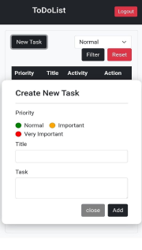
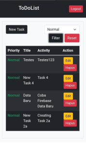

Project
Project cross platform menggunakan ionic dan react sebagai bahasa pemrograman utama. Project ini dibangun dalam bentuk kelompok dengan 4 anggota. Tugas saya untuk membantu menyiapkan backend, mengerjakan fitur login, register, create new task, dan merapikan dashboard serta membuat poster.
Features
- Sign up, Sign in, Sign out
- CRUD task
- Labeling important task
- Filter task by importance
- Reset filter
Preview

